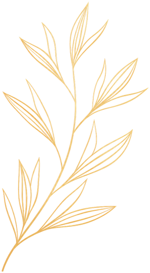
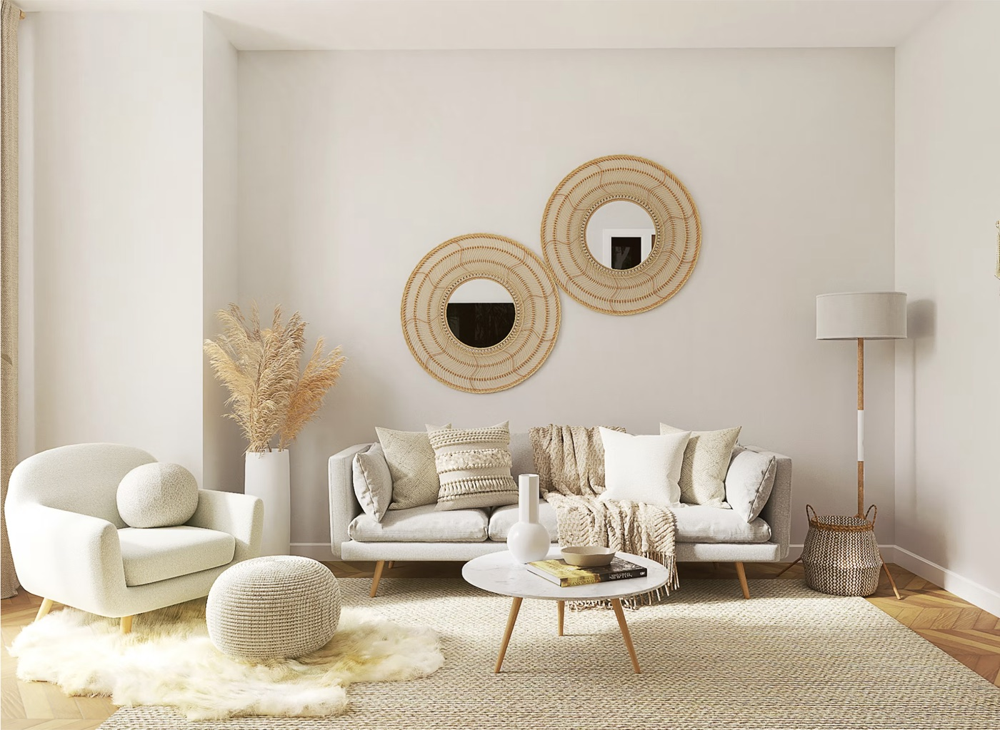
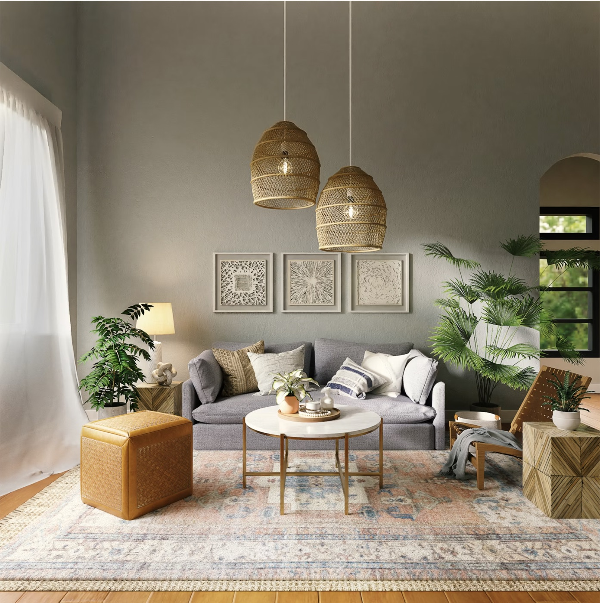
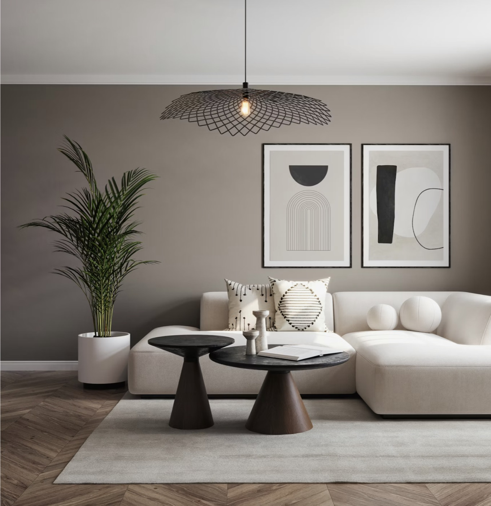
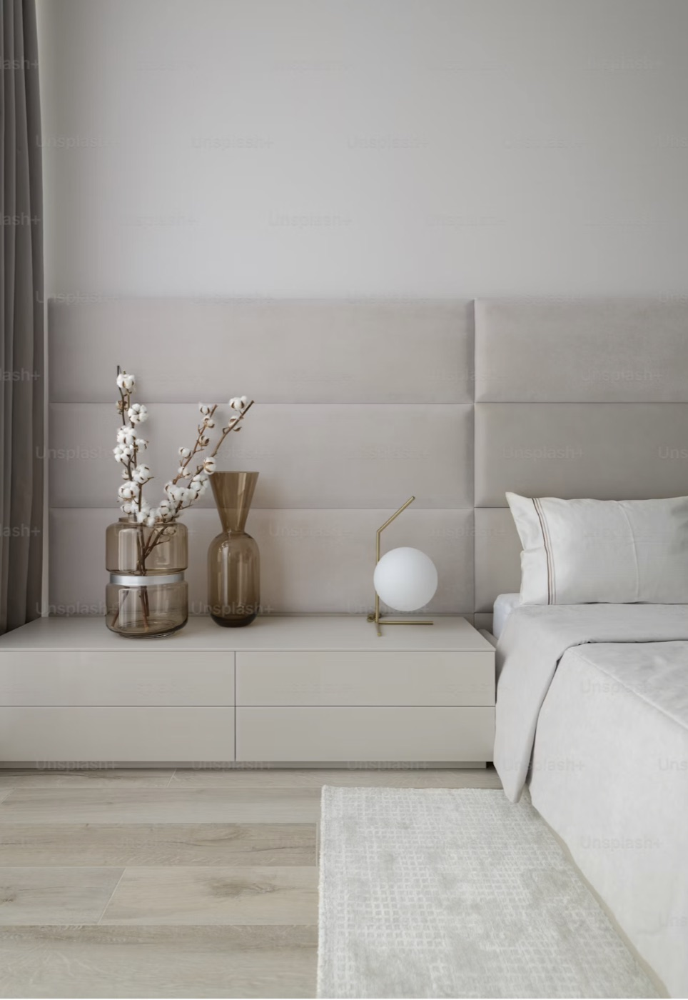

Our Vision
Spaces that matter
We envision spaces that elevate everyday life, inspire well-being and leave a positive legacy.
Everyday life•Well-being•Legacy
Spaces with stories. Details with Drama.
Architecture•Interiors•Design

About Us
The Alchemy Atelier is an architecture and interior design studio driven by curiosity, creativity and purpose. Every project is drawn slowly, built carefully and finished with materials chosen to age well.
We collaborate closely with our clients to understand their story, their dreams and their lifestyle transforming them into timeless spaces that are beautiful, functional and deeply personal.
Our Vision
We envision spaces that elevate everyday life, inspire well-being and leave a positive legacy.
Everyday life•Well-being•Legacy

Our Philosophy
We believe that timeless design emerges when form, function and emotion exist in perfect harmony.
Form•Function•Emotion
Six stages, from the first conversation to the day you move in.
01
We start by listening. How you live, what the space has to hold, and the budget it sits inside.
02
Mood boards, palettes and first directions, until the scheme reads like you rather than like us.
03
Layouts drawn and redrawn: circulation, sightlines, and where the light falls through the day.
04
Finishes chosen in the hand rather than off a screen: stone, timber, fabric and paint, seen together.
05
Joinery, lighting and fittings drawn to the millimetre, down to the last handle and hinge.
06
One team on site and one line of accountability, through the snag list to the day we hand you the keys.
Four ways to work with the studio, from a whole building to a single piece. Whichever you choose, the same hands draw it and see it through to site.

Whole interiors resolved as one scheme. The plan, the joinery, the materials and the light are considered together, so a room reads as a single idea rather than a series of purchases.
View service →
Furniture and objects drawn for the room they belong to. Prototyped with the workshops we work with, detailed to the hardware, and made to outlast the scheme around them.
View service →
Ground up homes, additions and adaptive reuse. Drawn from the first sketch through to the last handle, and seen through the approvals and the site in between.
View service →
A second pair of eyes on a project already moving, from a studio you are not committing the whole job to.
View service →Same vision. Deeper attention.
Principal Architect and Design Futurist
Jemima Francis
An architect, interior designer and curator based in Hyderabad, Jemima leads The Alchemy Atelier on the belief that thoughtful design can change the way we live, feel and belong.
From architecture and interiors through to curation, every project is personally drawn and personally seen through, so the journey from concept to completion stays in one pair of hands. No hand-offs, no juniors learning on your home: the person you meet at the first conversation is the person on site at the last.
ArchitectureInteriorsConsultancy
“Design, for me, is a dialogue between people, places and possibilities.”
Ar. Jemima Francis
We believe that a great design is a collaboration of ideas, vision and trust. Here is what sets the studio apart.
Detailed quotations, clear material specifications and honest budgeting at every stage. No hidden costs.
Your drawings are developed under one roof by our own architects and interior designers.
Whoever you speak to first is the one who draws the work, prices it and meets you on site. Nothing is handed on.
Structured updates from site, so you always know what is happening and what comes next.
Skilled craftsmen and suppliers chosen for workmanship, because a good design still needs skilled hands.
From the first sketch to the final styling, managed as one project with one line of accountability.
Kind words
From first homes to forever spaces — our clients share what it’s like to work with The Alchemy Atelier.

The Alchemy Atelier completely understood our style and translated it into a home that feels like us.”
Priya Sharma
Homeowner, Hyderabad

Thoughtful design, clear communication and a seamless experience from start to finish.”
Sameer Iyer
Villa Owner, Pune

They brought warmth, character and a sense of calm to our space. We couldn’t be happier.”
Ridhi Jain
Business Owner, Delhi

What we said in the first conversation is exactly what got drawn, and exactly what got built.”
Aarav Menon
Homeowner, Kochi

Spaces that stay with you
Client stories
Hear from homeowners and collaborators who trusted The Alchemy Atelier to bring their spaces to life.
50+Homes
designed
100+Happy
clients
10+Cities
Eight ways the studio works, and most projects want more than one. Tick whatever sounds like yours, as many as you like, and it travels into the message with you, so you never have to explain it twice.
We’ve got you.
Now pick how you would rather talk. The buttons in the corner will book a consultation, open WhatsApp, start an enquiry or call the studio, and each one carries your choices with it.
Nothing chosen yet, which is fine too.
Tell us what you need
Leave it here and the studio will come back to you, usually the same working day.